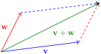

A real quantity is also called a scalar quantity, or scalar. For some positive integer \(n\text{,}\) an \(n\)-vector is a quantity described by an ordered list of \(n\) scalars, often written as a comma separated list of numbers surrounded by open parenthesis, i.e. as \(\mathbf{v} = (v_1,\dots,v_n)\text{.}\) Later on in the course we will also encounter vectors written as a row or column of numbers in square brackets, i.e.
The collection of all \(n\)-vectors is denoted \(\R^n\text{.}\)
It is customary to use bold letters for variables, such as \(\mathbf{v}\) or \(\mathbf{w}\text{,}\) to represent vectors. We let \(\mathbf{0}\) denote the vector \((0,\dots,0)\) consisting only of zeroes.
Remark1.1.2.
A point in \(n\)-dimensional space can also be identified with an ordered list of \(n\) numbers using Cartesian coordinates. We will therefore often blur the distinction between points and vectors in these notes, though we often use the terms in different contexts, i.e. a point refers to a location in space, whereas vectors represent quantities that ‘point’ in a particular direction. Some sources use angled brackets such as \(\langle v_1,\dots,v_n \rangle\) to denote vectors, whereas the round brackets \((x_1,\dots,x_n)\) are reserved for points. But we will not use this notation in this textbook.
SubsectionVectors as Displacements in Space
Vectors are often used to represent physical quantities involving displacement in space. The vector \(\mathbf{v} = (v_1,v_2,v_3)\) represents the displacement from the origin to the point with coordinates \((v_1,v_2,v_3)\text{,}\) or more generally, the displacement from a point with coordinates \((x,y,z)\) to the point with coordinates \((x + v_1, y + v_2, z + v_3)\text{.}\)
Because vectors often indicate displacements, they are often drawn pictorially as arrows starting at a point, and ending where that point is displaced by the vector.
Figure1.1.3.A vector \(\mathbf{v}\) represented as an arrow between two points \(A\) and \(B\text{.}\)
Activity1.1.1.Vectors as Displacements in Space.
What is the vector representing the displacement from the point \((1,2)\) to the point \((5,7)\text{.}\)
Solution.
If \(\mathbf{v} = (v_1,v_2)\) was the displacement, then we would have \((1 + v_1, 2 + v_2) = (5,7)\text{,}\) i.e. so that \(1 + v_1 = 5\) and \(2 + v_2 = 7\text{.}\) Solving these equations gives \(v_1 = 4\) and \(v_2 = 5\text{,}\) so that the displacement vector is \(\mathbf{v} = (4,5)\text{.}\)
Remark1.1.4.
More generally, the displacement vector from a point \((x_1,y_1)\) to a point \((x_2,y_2)\) is the vector \(\mathbf{v} = (x_2 - x_1, y_2 - y_1)\text{.}\) Given two points \(\mathbf{x}\) and \(\mathbf{y}\text{,}\) we denote the displacement vector from \(\mathbf{x}\) to \(\mathbf{y}\) by \(\mathbf{y} - \mathbf{x}\text{.}\) The point obtained from displacing a point \(\mathbf{x}\) by a vector \(\mathbf{v}\) will be denoted \(\mathbf{x} + \mathbf{v}\text{.}\)
Drawing vectors as arrows immediately leads to the notion of the length of a vector, by taking the length of the line segment upon which the arrow is built.
Definition1.1.5.The Length of a Vector.
The length of a vector \(\mathbf{v} = (v_1,\dots,v_n)\) is the quantity
Verify, using planar geometry, that the length of a \(2\)-vector is the length of the line-segment of the arrow representing the vector.
Solution.
Let \(\mathbf{v} = (x,y)\) be an arbitrary \(2\)-vector. Consider a triangle with vertices \((0,0)\text{,}\)\((x,0)\text{,}\) and \((x,y)\) (see Figure 1.1.6).
A triangle with vertices \((0,0)\text{,}\)\((x,0)\text{,}\) and \((x,y)\text{,}\) drawn to determine the length of the line-segment upon which a \(2\)-vector is based.
Figure1.1.6.A triangle with vertices \((0,0)\text{,}\)\((x,0)\text{,}\) and \((x,y)\text{,}\) drawn to determine the length of the line-segment upon which a \(2\)-vector is based.
This triangle is right-angled (the two legs are horizontal and vertical), and the hypotenuse is the line-segment upon which the vector \(\mathbf{v}\) is built. The length of the leg of the triangle from \((0,0)\) to \((x,0)\) is \(|x|\text{,}\) and the length of the line from \((0,x)\) to \((x,y)\) is \(|y|\text{.}\) By Pythagoras’ theorem, we conclude that the length of the hypotenuse is
Two displacements can be combined just apply one displacement after the other is applied. This naturally leads to the notion of adding two vectors.
Definition1.1.7.Adding Vectors.
The sum of two vectors \(\mathbf{v} = (v_1,\dots,v_n)\) and \(\mathbf{w} = (w_1,\dots,w_n)\text{,}\) denoted \(\mathbf{v} + \mathbf{w}\text{,}\) is the vector given by the tuple \((v_1 + w_1, \dots, v_n + w_n)\text{.}\)
Remark1.1.8.
The sum of two vectors can be illustrated pictorially as in Figure 1.1.9 by drawing the parallelogram with the vectors placed along two sides of the parallelogram.

The sum of two vectors \(\mathbf{v}\) and \(\mathbf{w}\text{.}\)
Figure1.1.9.The sum of two vectors \(\mathbf{v}\) and \(\mathbf{w}\text{.}\)
One can also scale a vector by a given scalar quantity.
Definition1.1.10.Scaling Vectors.
If \(\mathbf{v} = (v_1,\cdots,v_n)\text{,}\) and \(t \in \R\) is a scalar, we let \(t \mathbf{v}\) denote the vector \((tv_1, \cdots, tv_n)\text{,}\) i.e. multiplying each entry of the vector \(\mathbf{v}\) by \(t\text{.}\)
Remark1.1.11.
We will discuss these operations in far more detail in Chapter 2 and Chapter 4.
SubsectionDot Products of Vectors
The dot product is a simple quantity which provides a simple method of measuring the angles between different vectors.
Definition1.1.12.The Dot Product.
The dot product of two \(n\)-vectors \(\mathbf{v} = (v_1,\dots,v_n)\) and \(\mathbf{w} = (w_1,\dots,w_n)\) is the scalar quantity
Geometrically, the dot product of two vectors is a simply calculated quantity which represents the internal angle between the two vectors \(\mathbf{v}\) and \(\mathbf{w}\text{,}\) in a certain fashion. If we draw the two vectors as arrows with the same startpoint, then they form an angle on the plane containing both vectors, and the internal angle \(\theta\) is given below.
Theorem1.1.13.The Angle Between Vectors.
For two vectors \(\mathbf{v}, \mathbf{w} \in \R^n\text{,}\) the internal angle \(\theta\) between the vectors is the angle satisfying the equation
The dot product can be thought of as a measure of the similarity between two vectors. Suppose \(\theta\) is the internal angle between two vectors \(\mathbf{v}\) and \(\mathbf{w}\text{:}\)
If \(\theta\) is close to zero, then the two vectors are close to pointing in the same direction (the coordinates are correlated). Since \(\cos(0^\circ) = 1\text{,}\) this occurs precisely when
If \(\theta\) is close to \(180^\circ\text{,}\) then the two vectors are close to pointing in opposite directions (the coordinates are negatively correlated). Since \(\cos(180^\circ) = -1\text{,}\) this occurs precisely when
If \(\theta\) is close to \(90^\circ\text{,}\) the two vectors are close to pointing at right angles, and so are uncorrelated. Since \(\cos(90^\circ) = 0\text{,}\) this occurs precisely when
ranges between \(-1\) and \(1\text{,}\) and measures the degree to which the two vectors \(\mathbf{v}\) and \(\mathbf{w}\) point in the same, or opposite, directions. In some contexts, especially in certain areas of data science, this quantity is called the cosine similarity between the vectors \(\mathbf{v}\) and \(\mathbf{w}\text{.}\)
Activity1.1.3.
Calculate the internal angle between the two vectors \(\mathbf{v} = (1,2)\) and \(\mathbf{w} = (\sqrt{3} + 2, 2\sqrt{3} - 1)\text{.}\)
Solution.
We begin by calculating the lengths of the two vectors, i.e